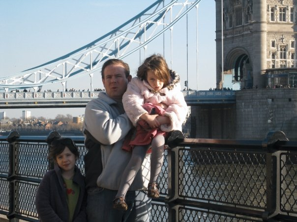

When planning your trip to London, this site may provide you with key information about off the beaten path places to visit whilst there. Hello, my name is Molly Gallagher and to be completely honest... I am obsessed with London. When I was 8-years-old, my family moved to London from the New Jersey. I have been in love with the city ever since and even had the opportunity to study abroad in London during the spring of 2022. During my semester abroad, my program provided me with an internship and, by some chance, I was placed at a touring company. Whilst working at Totally Tailored I learned the importance of designing iternaries that matched our clients needs, along with leaning a bit about the attractions and surrounding areas.
